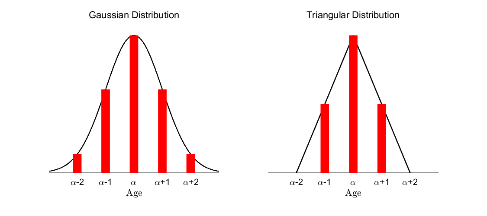
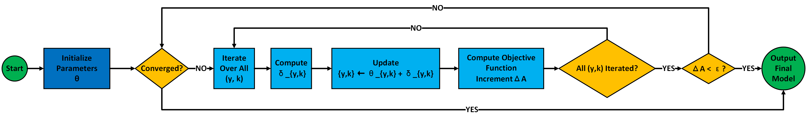
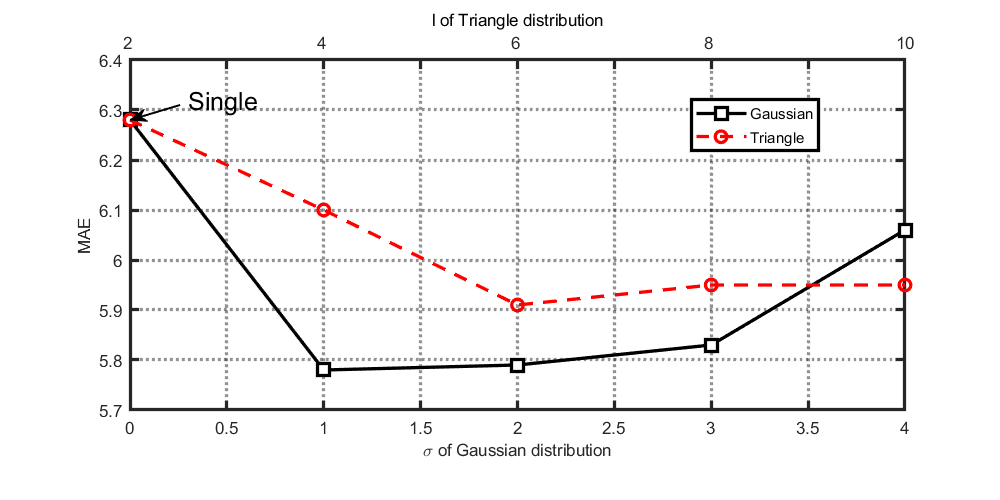

Thorough Analysis | From Single Labels to Label Distributions: A New Approach for Facial Age Estimation
This article offers a thorough analysis of Xin Geng et al.’s paper Facial Age Estimation by Learning from Label Distributions (2011), systematically organizing its research framework and deriving the key mathematical models in detail. The analysis clarifies the definition of label distributions, examines the label distribution learning model that uses KL divergence as its objective, derives the conditional probability function based on the maximum entropy model along with its optimization algorithm IIS-LLD, and finally summarizes the paper’s experimental design and results.
Paper link: Facial Age Estimation by Learning from Label Distributions
Facial age estimation faces the challenge of data sparsity (e.g., insufficient samples in high-age groups). Inspired by the continuity of age changes (adjacent ages having similar features), Xin Geng proposed the label distribution learning framework: expanding a single age label into a distribution that covers neighboring ages. By sharing age features, this alleviates data scarcity and significantly improves generalization, especially for higher ages.
Defining Label Distributions
A label distribution is a generalization of single-label and multi-label learning. Its meaning differs from probability or fuzzy classification, though it is highly similar in mathematical structure to probability. The core idea is that each label is a correct description of the sample to a different degree, and all labels together form a complete description of the sample. Compared with traditional single-label learning, this approach better reflects inter-class correlations and is particularly suitable for tasks with continuous variables like age estimation.
Let \(\alpha\) be the original label and \(y\) a general label. Converting from a single label to a label distribution follows two basic principles:
The original label has the highest degree of description, i.e., \(P(\alpha)\) should be the maximum value in the distribution.
Labels further away from the original label have lower degrees of description, i.e., \(P(y)\) decreases as \(|y - \alpha|\) increases.
The paper uses the following two label distributions:

Gaussian Distribution, which smoothly decreases neighboring label weights via exponential decay, defined as: \[ P(y) = \frac{1}{Z} \exp \left(-\frac{(y - \alpha)^2}{2\sigma^2} \right) \]
Here, \(Z\) is the normalization factor and \(\sigma\) controls the spread of the distribution. The Gaussian distribution makes effective use of neighboring label information and ensures continuity modeling of age variation.
Triangle Distribution, which uses linear decay and assigns weight to neighboring labels only within a certain range: \[ P(y) = \max \left(0, 1 - \frac{|y - \alpha|}{l} \right) \]
Here, \(l\) determines the span of the distribution. Compared with the Gaussian distribution, the triangle distribution is more localized, ensuring labels far from the original label do not influence the model.
Label Distribution Model and Learning Method
Below is the basic structure for modeling and optimizing label distribution learning:


Optimization Objective: KL Divergence
Let the input space be $ \mathcal{X} = \mathbb{R}^d $ and the label space be $ \mathcal{Y} = \{ y_1, y_2, \dots, y_c \} $. In traditional classification, each sample $ x_i $ corresponds to a single label, while in label distribution learning, each sample $ x_i $ is associated with a label distribution $ P_i(y) $ that represents the weight over different labels. The goal is to learn a conditional probability distribution $ p(y|x; \theta) $ that is as close as possible to $ P_i(y) $. We use KL divergence as the criterion:\[ \theta^* = \arg\min_{\theta} \sum_i \sum_y P_i(y) \log \frac{P_i(y)}{p(y|x_i; \theta)} \]
Since \(P_i(y)\) is constant for the training samples, minimizing KL divergence is equivalent to maximizing the log-likelihood (MLE): \[ \theta^* = \arg\max_{\theta} \sum_i \sum_y P_i(y) \log p(y|x_i; \theta) \] The label distribution learning framework is closely related to traditional problems when KL divergence is used as the objective:
- In a single-label classification task, each sample has a single deterministic label, i.e., $ P_i(y) = \delta(y, y_i) $. The objective degenerates to the classic maximum likelihood estimation:
\[ \theta^* = \arg\max_{\theta} \sum_i \log p(y_i | x_i; \theta) \]
- In a multi-label classification task, each sample $ x_i $ is associated with a label set $ Y_i $, and we assume $ P_i(y) $ is uniformly distributed over multiple labels. The objective becomes an entropy-weighted label assignment, turning multi-label samples into weighted single-label samples and optimizing the MLE objective:
\[ \theta^* = \arg\max_{\theta} \sum_i \frac{1}{|Y_i|} \sum_{y \in Y_i} \log p(y | x_i; \theta) \]
Conditional Probability Form: Maximum Entropy Model
Maximum Entropy Model
To determine the form of the conditional probability function, we need to adjust parameters to optimize the KL divergence. The paper uses the maximum entropy model for the conditional probability function, which is itself an optimization problem. The objective is to maximize entropy—under constraints—so that the conditional distribution $ p(y|x; \theta) $ is as uniform as possible, contains the most information, avoids extra assumptions, and thus improves generalization: $$ \max_{p(y|x; \theta)} \sum_{x,y} \tilde{p}(x) p(y|x; \theta) \log p(y|x; \theta) $$ Here, $p(y|x; \theta)$ is the conditional probability to be optimized; $ \tilde{p}(x,y) $ is the empirical joint distribution estimated from training data; $ \tilde{p}(x) $ is the empirical marginal distribution, i.e., $ \tilde{p}(x) = \sum_y \tilde{p}(x,y) $; $ f_k(x,y) $ are feature functions describing relationships between input $ x $ and label $ y $; and $ \theta $ are model parameters that determine the shape of the conditional distribution.There are two constraints in the maximum entropy model:
- Expectation constraint on feature functions, requiring the model’s expectations to match those of the training data:
\[ \sum_{x,y} \tilde{p}(x,y) f_k(x,y) = \sum_{x,y} \tilde{p}(x) p(y|x; \theta) f_k(x,y), \quad \forall k. \]
- Probability normalization constraint, ensuring $ p(y|x; ) $ is a valid probability distribution:
\[ \sum_y p(y|x; \theta) = 1, \quad \forall x. \] Feature functions may feel abrupt; think of them this way: if a feature function represents the number of facial wrinkles, then the trained model will, in expectation, fit the wrinkle count of the training samples. In the paper, the feature functions come from a feature extractor (a black box). Although its values are not directly interpretable, a good extractor outputs features highly related to the target (e.g., age), and this constraint lets the model optimally fit those prediction-related features.
This optimization has a closed-form solution: \[ p(y|x; \theta) = \frac{1}{Z} \exp\left( \sum_k \theta_k f_k(x,y) \right), \]
where
\[ Z = \sum_y \exp\left( \sum_k \theta_k f_k(x,y) \right). \]
Theoretical Derivation of the Closed-Form Solution
The optimization objective of the maximum entropy model is to maximize conditional entropy:
\[ H(P) = - \sum_{x,y} \tilde{P}(x) P(y|x) \log P(y|x) \]
subject to the following constraints:
- Empirical expectation constraint:
\[ E_P(f_i) = E_{\tilde{P}}(f_i), \quad i=1,2,\dots,n \]
- Probability normalization:
\[ \sum_y P(y|x) = 1 \]
Introduce Lagrange multipliers \(w_0, w_1, \dots, w_n\) to construct the Lagrangian:
\[ L(P,w) = -H(P) + w_0 \left( 1 - \sum_y P(y|x) \right) + \sum_{i=1}^{n} w_i \left( E_{\tilde{P}}(f_i) - E_P(f_i) \right) \]
Expanding:
\[ L(P, w) = \sum_{x,y} \tilde{P}(x) P(y|x) \log P(y|x) + w_0 \left( 1 - \sum_y P(y|x) \right) \]
\[ + \sum_{i=1}^{n} w_i \left( \sum_{x,y} \tilde{P}(x,y) f_i(x,y) - \sum_{x,y} \tilde{P}(x) P(y|x) f_i(x,y) \right) \]
Taking the partial derivative with respect to \(P(y|x)\):
\[ \frac{\partial L(P,w)}{\partial P(y|x)} = \tilde{P}(x) \left[ \log P(y|x) + 1 \right] - \tilde{P}(x) \sum_{i=1}^{n} w_i f_i(x,y) - w_0 \]
Setting it to zero:
\[ \log P(y|x) + 1 = \sum_{i=1}^{n} w_i f_i(x,y) + w_0 \]
i.e.,
\[ P(y|x) = \exp \left( \sum_{i=1}^{n} w_i f_i(x,y) + w_0 - 1 \right) \]
Since \(P(y|x)\) must satisfy normalization:
\[ \sum_y P(y|x) = 1 \]
we normalize:
\[ \sum_y \exp \left( \sum_{i=1}^{n} w_i f_i(x,y) + w_0 - 1 \right) = 1 \]
Define the normalization factor:
\[ Z(x) = \sum_y \exp \left( \sum_{i=1}^{n} w_i f_i(x,y) \right) \]
then:
\[ \exp (w_0 - 1) = \frac{1}{Z(x)} \]
Substitute back:
\[ P(y|x) = \frac{\exp \left( \sum_{i=1}^{n} w_i f_i(x,y) \right)}{Z(x)} \]
Thus the closed-form solution of the maximum entropy model is:
\[ P(y|x) = \frac{\exp \left( \sum_{i=1}^{n} w_i f_i(x,y) \right)}{Z(x)} \]
where:
\[ Z(x) = \sum_y \exp \left( \sum_{i=1}^{n} w_i f_i(x,y) \right) \]
This shows the maximum entropy model takes an exponential form—an exponential family—where \(w_i\) are to be optimized.
If you’re careful, you may notice that in the derivation, the closed-form solution was plugged into the normalization constraint to determine \(w_0\). Why not also plug it into the expectation-equality constraint to determine \(w_i\)? Would the expectation equality still hold? Think of it like this: without the expectation constraint on feature functions, the final model under maximum entropy would be uniform. Adding this constraint yields an exponential-form distribution. The expectation constraint acts as a “data-driven prior,” determining the distribution’s shape and guiding the model to leverage data features. It’s a “soft constraint” that fixes the form and forces the model to match the data’s statistics while allowing some flexibility.
Optimization Algorithm: IIS-LLD
Objective Function
Plug the exponential-form conditional probability into the KL divergence: \[ T(\theta) = \sum_{i} \sum_{y} P_i(y) \log \left( \frac{1}{Z(x_i)} \exp \left( \sum_k \theta_{y,k} g_k(x_i) \right) \right) \] Expand the logarithm: \[ T(\theta) = \sum_{i} \sum_{y} P_i(y) \sum_k \theta_{y,k} g_k(x_i) - \sum_i \sum_{y} P_i(y) \log Z(x_i) \]
Since \(Z(x_i)\) is independent of \(y\) and \(\sum_y P_i(y) = 1\): \[ \sum_{y} P_i(y) \log Z(x_i) = \log Z(x_i) \sum_y P_i(y) = \log Z(x_i) \] Thus \[ T(\theta) = \sum_{i} \sum_{y} P_i(y) \sum_k \theta_{y,k} g_k(x_i) - \sum_i \log Z(x_i) \] Expand \(Z(x_i)\): \[ T(\theta) = \sum_{i} \sum_{y} P_i(y) \sum_k \theta_{y,k} g_k(x_i) - \sum_i \log \sum_y \exp \left( \sum_k \theta_{y,k} g_k(x_i) \right) \]
Lower Bound on the Objective Increment
We aim to maximize: \[ T(\theta) = \sum_{i,y} P_i(y) \sum_k \theta_{y,k} g_k(x_i) - \sum_i \log Z(x_i) \] where \[ Z(x_i) = \sum_y \exp \left( \sum_k \theta_{y,k} g_k(x_i) \right) \]
Define the parameter update: \[ \theta^{(t+1)} = \theta^{(t)} + \Delta \] with increments: \[ \delta_{y,k} = \theta_{y,k}^{(t+1)} - \theta_{y,k}^{(t)} \]
The updated normalization term: \[ Z^*(x_i) = \sum_y \exp \left( \sum_k (\theta_{y,k} + \delta_{y,k}) g_k(x_i) \right) \]
Objective change: \[ T(\theta + \Delta) - T(\theta) = \sum_{i,y} P_i(y) \sum_k \delta_{y,k} g_k(x_i) - \sum_i \log \frac{Z^*(x_i)}{Z(x_i)} \]
Compute the second term: \[ \frac{Z^*(x_i)}{Z(x_i)} = \frac{\sum_y \exp \left( \sum_k (\theta_{y,k} + \delta_{y,k}) g_k(x_i) \right)} {\sum_y \exp \left( \sum_k \theta_{y,k} g_k(x_i) \right)} \]
Factor out the original normalization: \[ \frac{Z^*(x_i)}{Z(x_i)} = \sum_y \frac{\exp \left( \sum_k \theta_{y,k} g_k(x_i) \right)}{Z(x_i)} \exp \left( \sum_k \delta_{y,k} g_k(x_i) \right) \]
Since \[ p(y | x_i; \theta) = \frac{\exp \left( \sum_k \theta_{y,k} g_k(x_i) \right)}{Z(x_i)} \]
we have \[ \frac{Z^*(x_i)}{Z(x_i)} = \sum_y p(y | x_i; \theta) \exp \left( \sum_k \delta_{y,k} g_k(x_i) \right) \]
Using the inequality \[ -\log x \geq 1 - x \]
and applying it to the objective change: \[ -\sum_i \log \sum_y p(y | x_i; \theta) \exp \left( \sum_k \delta_{y,k} g_k(x_i) \right) \geq \sum_i \left( 1 - \sum_y p(y | x_i; \theta) \exp \left( \sum_k \delta_{y,k} g_k(x_i) \right) \right) \]
Hence \[ T(\theta + \Delta) - T(\theta) \geq \sum_{i,y} P_i(y) \sum_k \delta_{y,k} g_k(x_i) + n - \sum_i \sum_y p(y | x_i; \theta) \exp \left( \sum_k \delta_{y,k} g_k(x_i) \right) \]
Next, apply Jensen’s inequality.
Define \[ g^\#(x_i) = \sum_k |g_k(x_i)| \]
Since the exponential function is convex, by Jensen’s inequality, letting $ s(g_k(x_i)) $ be the sign of $ g_k(x_i) $: \[ \sum_k \frac{|g_k(x_i)|}{g^\#(x_i)} \exp \left( \delta_{y,k} s(g_k(x_i)) g^\#(x_i) \right) \geq \exp \left( \sum_k \frac{|g_k(x_i)|}{g^\#(x_i)} \delta_{y,k} g^\#(x_i) \right) \]
i.e., \[ \sum_k \frac{|g_k(x_i)|}{g^\#(x_i)} \exp \left( \delta_{y,k} s(g_k(x_i)) g^\#(x_i) \right) \geq \exp \left( \sum_k \delta_{y,k} |g_k(x_i)| \right) \]
Reversing the sides: \[ -\exp \left( \sum_k \delta_{y,k} |g_k(x_i)| \right) \geq -\sum_k \frac{|g_k(x_i)|}{g^\#(x_i)} \exp \left( \delta_{y,k} s(g_k(x_i)) g^\#(x_i) \right) \]
Substitute into the previous lower bound: \[ T(\theta + \Delta) - T(\theta) \geq \sum_{i,y} P_i(y) \sum_k \delta_{y,k} g_k(x_i) + n - \sum_{i, y} p(y | x_i; \theta)\sum_k \frac{|g_k(x_i)|}{g^\#(x_i)} \exp \left( \delta_{y,k} s(g_k(x_i)) g^\#(x_i) \right) \]
Define the right-hand side as: \[ \mathcal{A}(\Delta | \theta) = \sum_{i,y} P_i(y) \sum_k \delta_{y,k} g_k(x_i) + n - \sum_{i, y} p(y | x_i; \theta)\sum_k \frac{|g_k(x_i)|}{g^\#(x_i)} \exp \left( \delta_{y,k} s(g_k(x_i)) g^\#(x_i) \right) \]
Thus \[ T(\theta + \Delta) - T(\theta) \geq \mathcal{A}(\Delta | \theta) \]
IIS-LLD Algorithm
Through the Jensen-based relaxation, \(T(\theta)\) is lower-bounded by \(\mathcal{A}(\Delta | \theta)\) such that the dimensions decouple and can be optimized independently.
We optimize by taking derivatives of \(\mathcal{A}(\Delta | \theta)\) and setting them to zero, yielding the increment for each dimension: \[ \frac{\partial \mathcal{A}(\Delta | \theta)}{\partial \delta_{y,k}} = \sum_{i} P_i(y) g_k(x_i) - \sum_{i} p(y | x_i; \theta) g_k(x_i) \exp(\delta_{y,k} s(g_k(x_i)) g^\#(x_i)) = 0. \]
This equation can be solved numerically (e.g., with the Gauss–Newton method) dimension by dimension to obtain \(\delta_{y,k}\) and complete iterative updates. The algorithm flow is as follows:

The classic IIS algorithm requires nonnegative feature functions. To ensure flexibility of the label distribution model, the paper removes this restriction, hence the name IIS-LLD. While the final solution can still be obtained, from a numerical perspective this may introduce instability.
Experiments and Results
The experiments use the FG-NET Aging Database, which contains 1002 facial images from 82 subjects aged 0–69. Each subject has 6–18 photos, with variations in illumination, expression, and pose. Due to fewer samples at higher ages, the researchers adopt Leave-One-Person-Out (LOPO) cross-validation: each round uses one subject’s images as the test set and the others as the training set, repeated for 82 rounds to obtain the final result. Mean Absolute Error (MAE) is used as the error metric between predicted and true ages.
Feature extraction is based on an Appearance Model. The model first detects facial landmarks, applies PCA (Principal Component Analysis) to reduce the dimensionality of landmark coordinates, then normalizes the face to a canonical shape, performs PCA on the normalized grayscale image to extract texture features, and finally combines shape and texture into a single feature vector. During PCA, 95% of variance is retained, keeping the first 200 principal components.
The methods and key parameters used in the experiments are listed below:
| Method | Key Parameters |
|---|---|
| IIS-LLD (Gaussian) | Gaussian distribution, standard deviation \( \sigma = 1 \) |
| IIS-LLD (Triangle) | Triangular distribution, base length \( l = 6 \) |
| IIS-LLD (Single) | Traditional single label, only true age used |
| AGES | Aging pattern subspace dimension = 20 |
| WAS | No parameter setting required |
| AAS | Error threshold = 3, age groups = (0-9, 10-19, 20-39, 40-69) |
| KNN | Number of nearest neighbors \( K = 30 \) |
| BP (Neural Network) | Hidden layer neurons = 100 |
| C4.5 (Decision Tree) | Using J4.8 version, default parameters |
| SVM | Kernel function: RBF, kernel width = 1 |
| HumanA (Grayscale Image) | Only shows grayscale face image with background removed |
| HumanB (Color Image) | Shows full color image, including hair, clothing, background, etc. |
The experimental results are shown below. Bars outperforming HumanA are highlighted in purple; those outperforming HumanB are marked with a vertical dashed line:

From the figure we can see that even without using label distributions, the IIS-LLD algorithm performs very well—thanks to the favorable properties of the maximum entropy model. Label distributions further enhance performance, pushing it beyond HumanB. The Gaussian distribution covers all ages, the triangle distribution only nearby ages, and the single-label case only the age itself—their performance decreases in that order.
The paper also tunes the parameters \(\sigma\) and \(l\) of the two label distributions and reports the corresponding MAE as follows:

Larger parameters imply a more dispersed distribution. When both parameters are zero, both distributions degenerate to a single label. The best performance arises by balancing the contribution from neighboring labels so they help without “overpowering” the true label.
Next is a visualization of the MAE across age ranges for the three IIS-LLD variants and the strongest baseline AGES, where \(n\) denotes the number of samples in that range.

In age ranges with abundant data (younger groups), IIS-LLD is slightly inferior to AGES, which is specialized for facial age estimation; in data-sparse older ranges, IIS-LLD clearly outperforms AGES. This validates the idea in the paper that label distributions compensate for data scarcity.
Finally, the authors outline three scenarios where label distributions are particularly valuable to address label uncertainty and data scarcity: when instance labels are inherently distributions; when strong correlations exist among classes; and when labels from different sources are disputed.